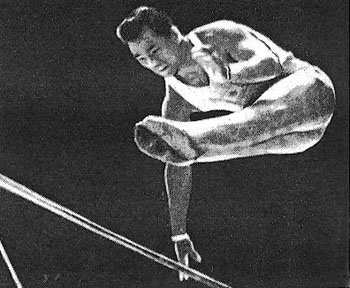

Takashi Ono (JPN)
1956 and 1960 Olympic AA
Silver Medalist
1956 and 1960 Olympic HB Champion
1962 World HB Champion

Medal Total
Olympic Games: 5 Gold,
4 Silver, 4 Bronze
World Championships: 2 Gold, 5 Silver, 1 Bronze
Takashi Ono was born on July 26, 1931, in Akita.
Competition Results
1952
Olympic Games: 5th Team, 12th AA, 3rd V, 4th FX
1954
World Championships: 2nd Team, 10th AA, 4th V
1956
Olympic Games: 2nd Team, 2nd AA, 1st HB, 2nd
PH, 3rd PB, 5th RG
1957
Moscow Summer Sports Games: 2nd Team, 2nd AA
1958
World Championships: 2nd Team, 2nd AA, 2nd FX, 2nd
PB, 3rd V, 6th R, 6th HB
1960
Olympic Games: 1st Team, 2nd AA, 1st V, 1st HB,
3rd R, 3rd PB, 4th FX, 6th PH
1962
World Championships: 1st Team, 4th AA, 1st HB, 5th FX,
5th V, 5th PB
1964
Olympic Games: 1st Team, 11th AA, 6th HB
This page was created on December
23, 2004 and was last updated on September 28, 2013.
© Gymn Forum